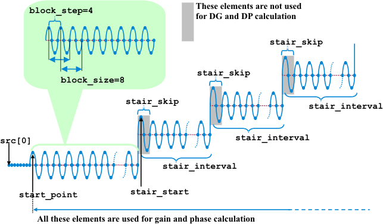

DSP_DGDP
This API computes the differential gain (DG) and differential phase (DP) of a specified array.
For the specified blocks in src, this API uses DFT operations to compute the gain and phase of each block. Then, the differential gain (DG) and differential phase (DP) are calculated as follows:
DG = (Maximum gain - Minimum gain)/ Minimum gain × 100 (Percent)
DP = (Maximum phase - Minimum phase) (degrees)
The following results are returned to result declared by the DGDPtype data type:
Member |
Type |
Returned Value |
|---|---|---|
result.dg |
DOUBLE |
DG in percent |
result.dp |
DOUBLE |
DP in degree |
result.max_gain |
INT |
Block number of maximum gain |
result.min_gain |
INT |
Block number of minimum gain |
result.max_phase |
INT |
Block number of maximum phase |
result.min_phase |
INT |
Block number of minimum phase |
The following results are returned to gain (unit is volts):
[0]: Gain of the 1st block
[1]: Gain of the 2nd block
:
:
[block_number-1]: Gain of the block_number-th block
The following results are returned to phase (unit is degrees):
[0]: Phase of the 1st block
[1]: Phase of the 2nd block
:
:
[block_number-1]: Phase of the block_number-th block
If stair is ON, stair_start, stair_interval and stair_skip have the following meaning:

This API is defined in the header file /opt/hp93000/soc/prod_com/include/MAPI/libdsp.h.
Syntax
DSP_DGDP(ARRAY_I& src, DGDPtype *result, ARRAY_D& gain, ARRAY_D& phase, INT start_point, INT block_step, INT block_size, INT block_number, INT relative_frequency, INT stair, INT stair_start, INT stair_interval, INT stair_skip); DSP_DGDP(INT *src, DGDPtype *result, DOUBLE *gain, DOUBLE *phase, INT start_point, INT block_step, INT block_size, INT block_number, INT relative_frequency, INT stair, INT stair_start, INT stair_interval, INT stair_skip); DSP_DGDP(ARRAY_D& src, DGDPtype *result, ARRAY_D& gain, ARRAY_D& phase, INT start_point, INT block_step, INT block_size, INT block_number, INT relative_frequency, INT stair, INT stair_start, INT stair_interval, INT stair_skip); DSP_DGDP(DOUBLE *src, DGDPtype *result, DOUBLE *gain, DOUBLE *phase, INT start_point, INT block_step, INT block_size, INT block_number, INT relative_frequency, INT stair, INT stair_start, INT stair_interval, INT stair_skip );
I/O |
Parameter |
Description / Range |
|---|---|---|
I |
src |
Source array |
O |
result |
DG, DP, and maximum and minimum phase and gain are returned to this DGDPtype type variable |
O |
gain |
Gain of block_size blocks is returned to this array Unit: volts |
O |
phase |
Phase of block_size blocks is returned to this array Unit: degrees |
I |
start_point |
Subscript at which the first block is started 1 ≤ start_point ≤ size of src |
I |
block_step |
Number of elements between the start subscripts of adjacent blocks = (start subscript of (k+1)-th block) - (start subscript of k-th block) 1 ≤ block_step |
I |
block_size |
Size of each block 4 ≤ block_size ≤ 256 |
I |
block_number |
Number of blocks to use Blocks can overlap 1 ≤ block_number start_point + (block_number - 1) × block_step + block_size ≤ 2097152 |
I |
relative_frequency |
Number of measured signal periods, which is used to calculate the relative frequency 1 ≤ relative_frequency ≤ block_size / 2 |
I |
stair |
Staircase ON: On OFF: Off |
I |
stair_start |
Subscript at which the first step of staircase starts If stair is OFF, this parameter has no meaning |
I |
stair_interval |
Number of source array elements for each step If stair is OFF, this parameter has no meaning |
I |
stair_skip |
Number of source array elements to skip at the beginning of each step These elements are not used for the DG and DP calculation stair_skip+4 ≤ stair_interval or 0 If stair is OFF, this parameter has no meaning If stair is ON and stair_skip is 0, it is same as stair is OFF |
Example
ARRAY_D time_array; DGDPtype result; ARRAY_D gain_array, phase_array; DSP_DGDP(time_array, &result, gain_array, phase_array, 20, 2, 4, 360, 1, ON, 30, 36, 4);
DSP_DGDP calculates and returns the gain and phase for 360 blocks in time_array array, and searches for the maximum and minimum gain and phase. Each block has 4 elements, and adjacent blocks overlap by 2 elements.
The total number of elements processed is 722 elements [(360-1)×2+4=722]. The first 20 elements of time_array are ignored and processing starts at subscript 20. The stair characteristic of the video signal starts at subscript 30. DSP_DGDP uses the last 32 (36 - 4) elements of each step to calculate the DG and DP values.